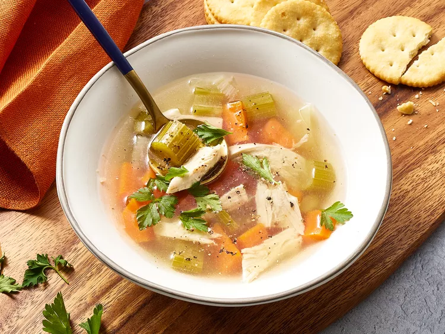

Chicken Soup

Amazing soup for a cold day
This is the perfect soup for when the autumn/winter months arrive!
Ingredients
- 1 Whole chicken
- 4 Carrots, halved
- 4 Stalks of celery, halved
- 1 Large onion, halved
- Water to cover
- Salt and pepper to taste
- 1 Teaspoon chicken bouillon granules (optional)
How to make
- Gather and prepare all the ingredients.
- Place the chicken, carrots, celery and onion in a large soup pot. Add enough cold water to cover. Bring this to a boil over a medium heat.
- Then, reduce the heat to low and simmer, uncovered, until meat falls off the bone, this should take approximately 90 minutes. Skim off foam every so often as needed.
- Remove the chicken from the pot and let it sit until cool enough to handle. Chop the meat in to pieces and discard skin and bones.
- Strain out the vegetables, reserving the stock. Then rinse the soup pot and return the stock to the pot.
- Chop the vegetables into smaller pieces and return the chicken and vegetables to the pot.
- Warm the soup until heated through. Add a touch of salt and pepper and the chicken bouillon to enhance the taste.
- Serve in a bowl and enjoy with a nice slice of fresh crusty bread.
Return Home